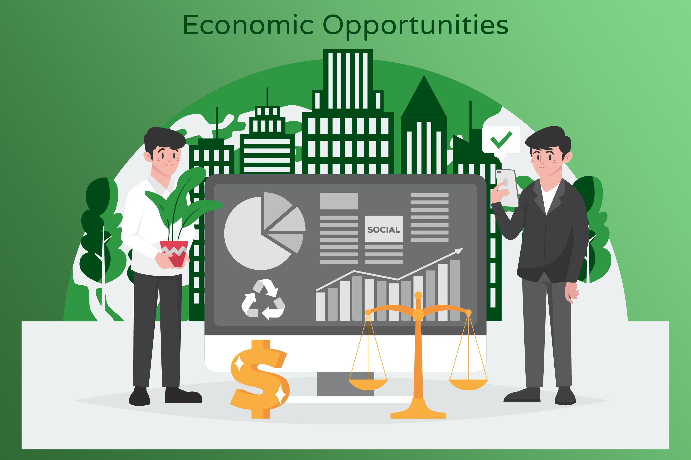

Camino hacia el futuro
Una de las razones por las que tantos paises se hayan llegado a juntar en torno a ésta empresa, es en gran medida, y por no decir, principalmente, por la flexibilidad que tiene. A diferencia del Protocolo de Kioto aquí no se aplican ningún tipo de sanciones a los paises que incumplan o no lleguen a los objetivos propuestos, se ha adoptado un modelo más cooperativo y transparente, donde se fomenta el intercambio de información y el apoyo económico entre naciones.
